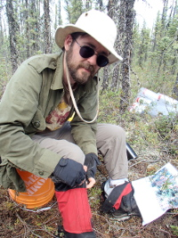
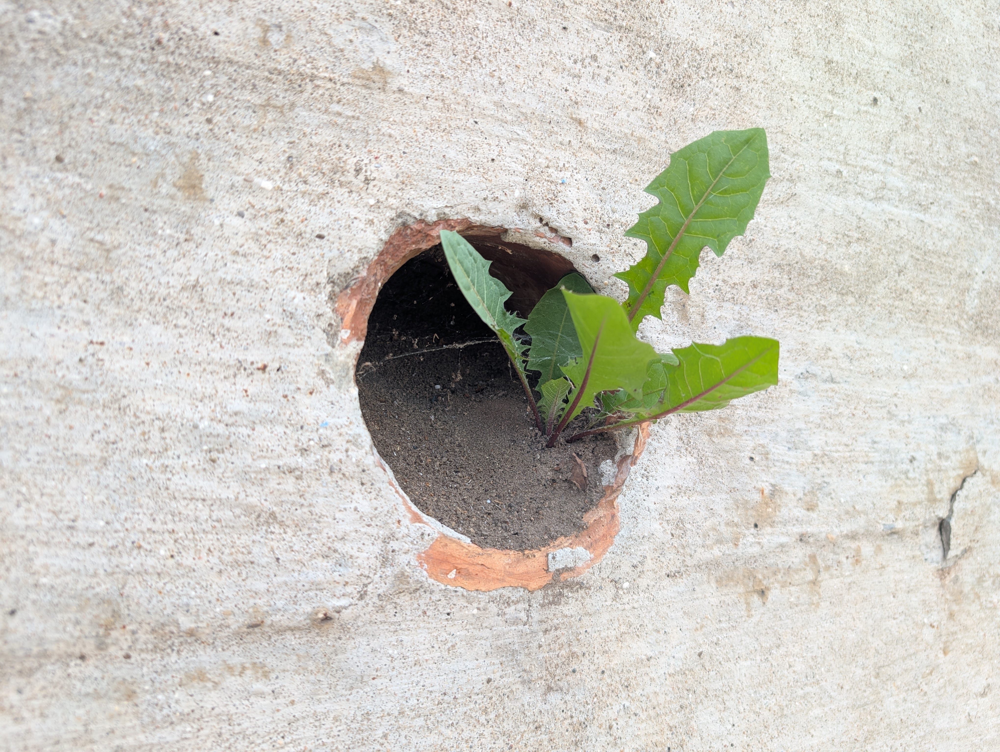

About

I am a PhD student in the Department of Philosophy at the University of Guelph.
I returned to philosophy after studying it as an undergraduate through a circuitous route. This is my second PhD. My first was in ecology and evolution, and I spent nearly 25 years as a practicing ecologist with expertise in mathematical ecology and evolutionary game theory. I sometimes wonder if I was ever really doing science, and if I might have been doing philosophy the whole time. Today, I sit at the intersection of theoretical biology and the philosophy of science, exploring the formal foundations and conceptual structures of ecological and evolutionary systems.
Current Research
"It is therefore convenient to have some term to describe the status of an animal in its community, to indicate what it is doing and not merely what it looks like, and the term used is 'niche'." - Charles Elton, 1927

My PhD thesis work interrogates the historical and conceptual evolution of the ecological niche concept. By bridging the gap between rigorous scientific modeling and the philosophical inquiry into how we define biological interactions, I aim to clarify the theoretical commitments of ecology. I also have interests in the limits and utility of reductionism, scientific ethics, and in ontologically defining plants; however, these are mostly half thought out ideas simmering on the back burner.
Selected Publications
After 25 years as a scientist, I have ~40 scientific publications. Below is a curated selection of my past scientific work that is most relevant to my current philosophical interests. For a complete archive, please visit Google Scholar.
-
Hyper Diversity, Species Richness, and Community Structure in ESS and Non-ESS Communities.
Honasoge, K.S., Vincent, T.L.S., McNickle, G.G., Dobbe, R., Staňková, K., Brown, J.S., and Apaloo, J. (2025). Dynamic Games and Applications, 15: 1424-1444. DOI -
Negative frequency dependent selection unites ecology and evolution.
Christie, M.R., and McNickle, G.G. (2023). Ecology and Evolution, 13: e10327. DOI -
Interpreting plant root responses to nutrients, neighbours and pot volume depends on researchers' assumptions.
McNickle, G.G. (2020). Functional Ecology, 34(10): 2199-2209. DOI | GitHub -
Unlimited Niche Packing in a Lotka-Volterra Competition Game.
Cressman, R., Halloway, A., McNickle, G.G., Apaloo, J., Brown, J.S., and Vincent, T.L. (2017). Theoretical Population Biology, 283: 116: 1-17. DOI -
The world's biomes and primary production as a triple tragedy of the commons foraging game played among plants.
McNickle, G.G., Gonzalez-Meler, M.A., Lynch, D.J., Baltzer, J.L., and Brown, J.S. (2016). Proceedings of the Royal Society B-Biological Sciences, 283: 20161993. DOI | GitHub -
When Michaelis and Menten met Holling: towards a mechanistic theory of plant nutrient foraging.
McNickle, G.G., and Brown, J.S. (2014). AoB Plants, 6: plu066. DOI
Contact
Department of Philosophy
University of Guelph
50 Stone Road East
Guelph, Ontario, Canada
Office: MacKinnon 361
Requires JavaScript to view.